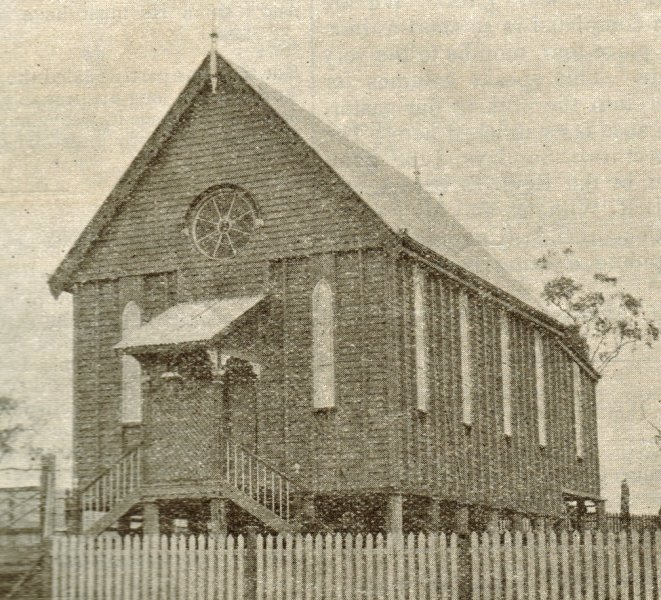

Baptist Church Archives Queensland
Queensland Baptist churches 1851-1955
1902 Mount Morgan
Next
Previous
Back

1902 Mount Morgan
Menu
Archives Home
Historical Lists & Resources
Baptist Union Offices 1877-2010
Baptist Union Qld. Ministers 1849-1905
Baptist Union Qld. Ministers 1906-1955
Baptists Periodicals
Digital Resources
Photo Albums
Baptist Churches in Queensland 1851-1955
Introduction to Baptist Churches in Queensland 1851-1955 Album
German Baptist churches
Archiving Guide Sheets
Baptist Heritage Queensland
BHQ Home
Publications
Index to Queensland Baptist Forum
Baptist World Alliance Heritage and Identity Commission
Get in touch
archives@qb.org.au
07-3354 5642
53 Prospect Road, Gaythorne, Queensland 4051